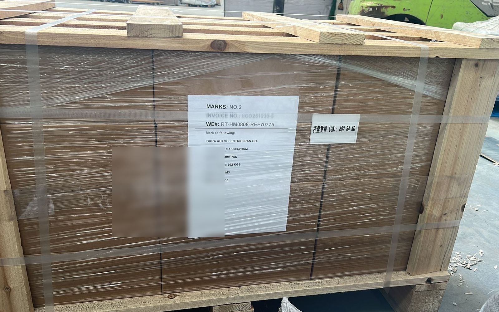

DOCS
Documents for China–Iran TIR road freight
What the shipper provides, what the carrier carries, and what the consignee's broker handles at Tehran Customs. Missing or mismatched documents hold cargo at the border and lengthen the schedule.
- Shipper: commercial invoice, packing list, sales contract — item, quantity and value must match the goods
- HS codes on the invoice; certificate of origin per the trade term
- Lithium / chemical cargo: a full 16-section MSDS and UN packaging documents, stated up front
- Carrier: the TIR carnet; the load is sealed at Khorgos
- Consignee's broker: clearance in Iran's ASYCUDA system against the warehouse entry receipt (Ghabz-e Anbar)
From the shipper
Commercial invoice, packing list and sales contract. Item name, quantity and value must match the actual goods. Put HS codes on the invoice. A certificate of origin is issued per the destination country and trade term.

For special cargo
Class 9 lithium batteries (UN3480/3481) and chemicals need a full 16-section MSDS and UN packaging documentation, stated in the first line of the enquiry, not at loading. Dual-use or encryption equipment needs a permit.
Carried by the convoy
The TIR carnet. The load is sealed at Khorgos and stays sealed to Tehran West Customs. See how TIR works.
At Tehran Customs
The goods enter the bonded warehouse and a warehouse entry receipt (Ghabz-e Anbar) is issued. The consignee's licensed broker clears the goods in the ASYCUDA system and pays import duty. We do not do Iran clearance.
No published rates. To get a quote, send three things: the origin hub; the destination customs (Tehran West Customs / Aprin / Mashhad); and the cargo data — HS code, gross weight in kg, volume in CBM.
FAQ
What has to match across the invoice and packing list?
Item description, quantity and value, and they must match the actual goods. Mismatches are the most common cause of a border hold.
Do I need an MSDS for lithium batteries?
Yes. A full 16-section MSDS and UN packaging documentation are required for UN 3480 / 3481 cargo, provided before dispatch.
Who holds the TIR carnet?
The carrier. We are a registered TIR operator and the convoy carries the carnet; the shipper does not need to arrange one.
What is the Ghabz-e Anbar?
The warehouse entry receipt issued when the cargo reaches the Tehran customs bonded warehouse. The consignee's broker clears against it in ASYCUDA.
Related: How TIR works on the China–Iran corridor · Iran's TIR carnet shortage and your China cargo · Overland skips Hormuz — what it means for insurance · Choosing your Iran customs broker · The three inputs a quote needs: HS, weight, CBM · After you request a quote · After the truck arrives at Tehran West Customs